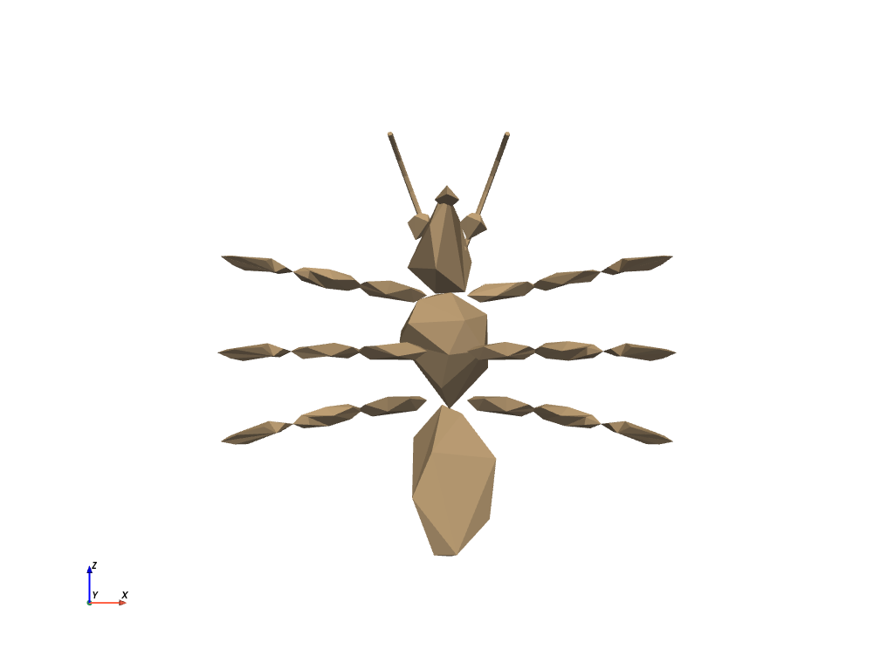

read¶
- read(filename, attrs=None, force_ext=None, file_format=None)¶
vtkやmeshioでサポートされている任意のファイルタイプを読み込みます．使用するリーダーを自動的に判断し，対応するメッシュを pyvista オブジェクトとしてラップします． 最初にネイティブの
vtkリーダーを試し，次にmeshioを使用しようとします．以下のフォーマットに対応しています．
標準的なデータセットリーダーです．
'.vtk''.pvtk''.vti''.pvti''.vtr''.pvtr''.vtu''.pvtu''.ply''.obj''.stl''.vtp''.vts''.vtm''.vtmb''.case'
画像フォーマット
'.bmp''.dem''.dcm''.img''.jpeg''.jpg''.mhd''.nrrd''.nhdr''.png''.pnm''.slc''.tiff''.tif'
その他のフォーマット
'.byu''.g''.p3d''.pts''.tri''.inp'
注釈
OpenFoam形式のファイルへの対応は限られています．
pyvista.readは，単一要素のpyvista.MultiBlockに含まれる最初のデータセットのみを自動的に返します． これらのファイルは以下の通りです．'.facet''.cas''.res''.foam'
注釈
meshioがサポートするフォーマットについては https://github.com/nschloe/meshio をご覧ください．meshioを使用したい場合は，必ずpip install meshioでインストールしてください．- パラメータ
- filename
str 読み込むファイルへの文字列パス．ファイルのリストが与えられた場合，
pyvista.MultiBlockデータセットが返され，各ファイルはデータセット内の個別のブロックです．- attrs
dict,optional リーダーで呼び出すアトリビュートのディクショナリ．ディクショナリのキーはアトリビュート/メソッド名で，値はこれらの呼び出しに渡される引数です．呼び出すアトリビュートがない場合は，
Noneを値として渡します．- force_ext
str,optional 指定した場合，リーダーは実際の拡張とは異なる拡張によって選択されます．たとえば，
'.vts'，'.vtu'などです．- file_format
str,optional meshioで読み込むファイルのフォーマット．
- filename
- 戻り値
pyvista.DataSetラップされたPyVistaデータセット．
例
サンプルメッシュをロードします．
>>> import pyvista >>> from pyvista import examples >>> mesh = pyvista.read(examples.antfile) >>> mesh.plot(cpos='xz')
 vtkファイルをロードします．
>>> mesh = pyvista.read('my_mesh.vtk')
meshioファイルをロードします．
>>> mesh = pyvista.read("mesh.obj")